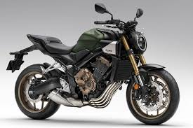
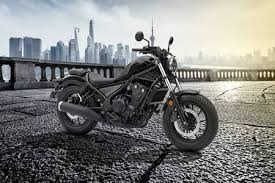

Honda Bikes
CB600R
Rebel 500


Honda is among the "Big Four" when it comes to Japanese motorcycles. It has long stood out as one of the
most trusted and popular brands. Honda builds its bikes using only the best materials and puts them through some of the most rigorous
tests in the motorcycle industry. This ensures that their motorbikes stand the test of time and perform under all sorts of conditions.
Honda's engines deliver a smooth power delivery with minimal vibration, allowing for comfortable rides and commuting. Honda is ranked as
one of the top motorcycle manufacturers for reliability with only 12% of motorbikes needing repairs within the first four years.
The CB600R is widely known as the mid-range power bike in the CBR family. The 2024 model comes with a 4 stroke, liquid-cooled
16 valve engine providing 599cc's and a maximum power of 89kW at 14,250 RPM. The 2024 model comes with a built-in quick shifter which allows for much ease
when commuting. It comes with a 3.4L oil capacity and 18L fuel tank, burning 5.5L/100km, which is less than many bikes of this calibre, even if its not by much.
The Rebel 500 is a cruiser style bike as opposed to the popular sport bike style. It is a liquid-cooled bike
outputting 34kW of power at 8,500 RPM. It has a 3.2L oil capacity and 11.2L fuel tank capacity, burning 3.6L/100km, making it a perfect choice
for a commuter bike or as the name suggests, a cruiser. The 2024 model is being sold at £6,399 brand new, so you're not breaking your bank
if you decide to buy this bike.